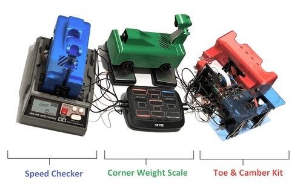

One of the most pressing challenges within autonomous mobility lies within highway scenarios: where autonomous vehicles would be interacting with human drivers at high speeds. These scenarios are indeed challenging because autonomous vehicles require data driven methods to identify the intent of opposing vehicles while also simultaneously planning its trajectory. Although full-scale and high-speed testbeds exist (i.e. Roborace), the space and cost requirements are highly demanding. For this reason, we created an open-source, 1:28 scale research platform for high-speed autonomous driving research that is accessible to everyone.
Building a scaled-down autonomous vehicle is quite a complex task. Please keep in mind the following considerations:
Although the material cost of building a vehicle is less than 100 USD, several tools are needed:
Thus, the real cost of having a fully-functioning vehicle can fluctuate (depending on which tools are readily accessible or not). Please keep this in mind before jumping immediately into the project.
We provide two ways a vehicle can race itself autonomously. These methods and their resources are articulated below:
In addition, most of the code that we use is Python. You also need to know how to code within Deep Learning language frameworks. Although the project had began with Keras for Deep Learning, TensorFlow was later used. Alternatives include Pytorch (which has potential merit considering its developments in the area of deployment).
It is necessary to have access to a 3D printer. because the parts are (at most) palm-sized, 3D printers around less than 100 USD (such as the Sondori Pico 3D printer) will be enough. We also recommend the Prusa Mini+ or MK3S+ with +0.02mm tolerance PETG filament if you are serious about getting quality prints. Knowing how to use Computer Aided Design (CAD) is also necessary, provided that you are interested in making modifications to your vehicle in the future.
You should be able to understand how to use the following as well:
Several materials are needed to successfully build a self driving RC car. Our bill of materials will be periodically updated to reflect the latest revisions. Note that the cost of components does not reflect shipping cost. In addition, there are a total of three ways of controlling the vehicle for data collection. The recommended method is the low latency option – as this offers the quick communication protocols.

Measurement Tools
Global Tracking Tool

With our vehicle and track components gathered, we can now assemble our fully autonomous radio control car.
As supplemental content, we provide an overhead diagram for wiring the vehicle electronic components together. To avoid inhaling soldering fumes, it is highly recommended that a mini desk fan is bought. It is also recommend to buy multiple soldering tips (considering the fact that they wear out). Lastly, it is recommend that soldering paste is used (however, make sure to minimize the amount of paste to prevent the wires from shorting).

Using our proposed testbed, we propose Behavioral Conditioning (BCo): an improved end-to-end controller specifically designed for high-speed autonomous driving. An LSTM-VAE neural network creates an approximator policy that predicts the desired steering action and motor-speed given an image input. A PID controller is also used to track the desired motor-speed with the observed target motor-speed using throttle action. Our algorithm is specifically designed to address the issue of noisy action outputs (of which is prevalent when directly correlating image inputs to action outputs).


First, BCo decouples both the task of low level vehicle control and high level path planning to address noise in throttle action outputs. While existing work attempts to solve the issue of noisy inference output via hardware, a hardware constrained scenario within this open-source platform makes it difficult to achieve. By decoupling the task of high speed autonomous driving using a PID controller, it is possible to directly track desired motor shaft speed as to alleviate any noisy throttle commands when inferencing action commands directly with convolutional neural networks.
Second, BCo addresses noisy outputs by using a Variational Auto-Encoder (VAE) architecture to make the neural network output continuous. Continuous action outputs are achieved by using the KL-divergence equation as shown to regularize the latent variables. The latent variables (which consist of gaussians) use the KL-divergence as a regularization term such that their distributions closely match a standard normal distribution – thus encouraging continuity between action outputs when given similar image inputs.
Our Github repository contains all the necessary code needed for the open-source racecar project. The purpose of each folder and what it contains is also documented below.
The ‘data_collection’ folder includes six folders for the Robot Operating System (ROS). It also contains the launch file for data collection. One can selectively record specific ROS topics after launching the launch file using the ‘rosbag record‘ command. During data collection, it is important to use the isocpus command to isolate CPU core: 0 within the Raspberry Pi (as to maximize the number of collected frames).
The ‘train‘ folder contains the ‘dataparser‘ folder to convert rosbag recordings into a csv file format. The ‘lrcn_motor.py‘ script is used to train the model. Tensorflow 2.4 was used with Tensorflow lite to convert and quantize the model. There are several models to choose from in the model folder (however, it's worth noting that that the vision transformer model might not be supported with tflite during conversion).
The ‘deploy‘ folder contains a script to deploy the tflite model.
The ‘evaluate‘ folder contains the following: a ROS folder to record the logitech brio stream and a script called, the ‘ground_truth_tracker.ipynb‘ which processes the rosbag into a video, and scripts for salient feature representation.
The ‘tools‘ folder contains useful commands. The usb_list.sh command lists all the devices linked to the Raspberry Pi board / desktop via USB port.
This folder contains all the necessary STL files needed to print the vehicle mounts. It is important to note that all the Ethernet ports and USB ports must be stripped prior to assembly. A quality print is necessary for the ‘t_connector.stl‘ file as an uneven print will cause the vehicle to warp, resulting in unwanted behavior when trying to drive straight
As a result of reading up until this point, hopefully you now have an adequate understanding in building your own fully autonomous scaled-down radio control car. Of course, we encourage you to connect with racers and have fun! If you have any questions, feel free to contact us.